Digital Products & Research
The most ambitious thread in my work: turning suspension setup from opinion into something you can define, measure, and reproduce. It pairs a mechanical model of the bike with an AI vision system that reads the rider — and the two together produced a result I believe is new to the industry.
For decades, setting up a mountain bike's suspension has been guided by sag charts and feel — an opinion rather than an informed decision. This project set out to answer what an ideal setup actually is, and why ideal varies so much from rider to rider.
I built two things. The first is a software model that simulates how any fork and shock behaves on any bike for any rider — how firm it is, how quickly it settles, and how well front and rear are matched. The second is a measurement system built around a GoPro and a pose-tracking AI that determines, frame by frame, a rider's weight distribution and center of gravity while they ride.
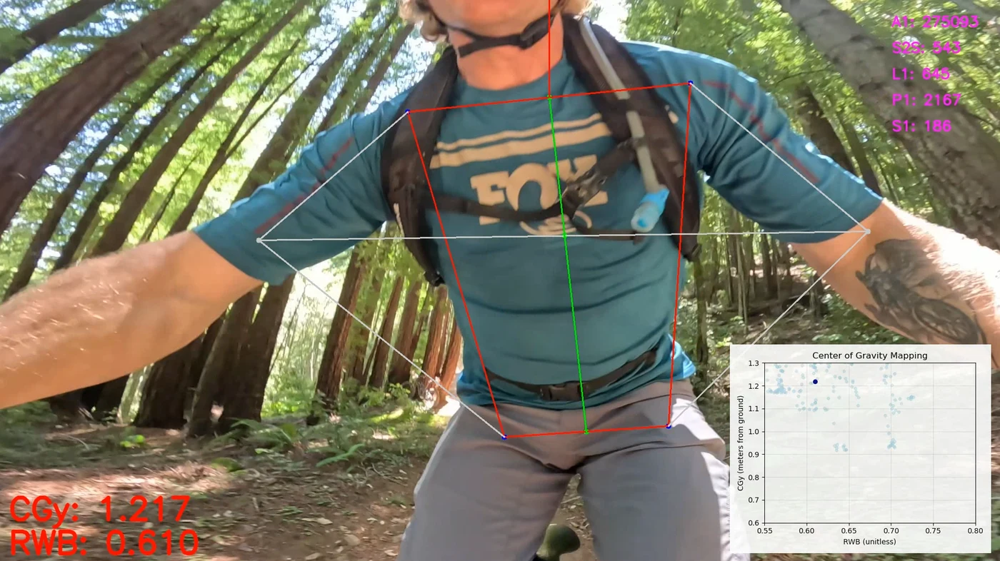
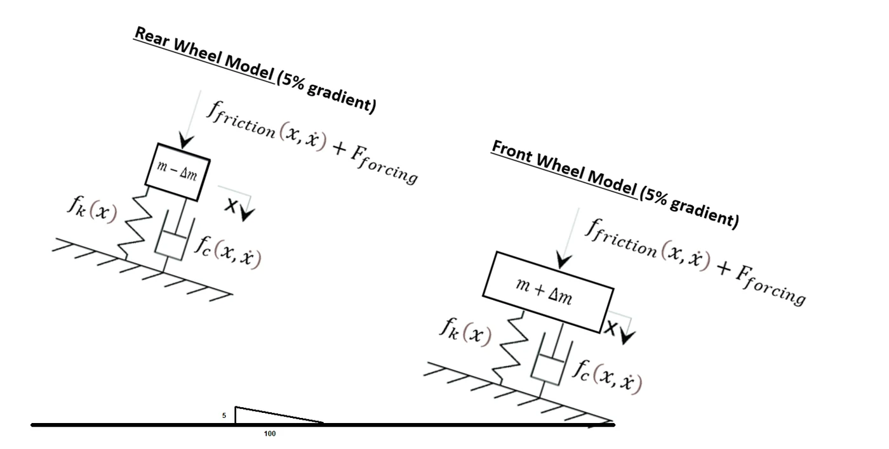
Read the executive summary
For decades, setting up a mountain bike's suspension has been guided by sag targets and feel. A rider bounces around the parking lot, consults a pressure chart, turns a few dials, and decides whether it feels right. It is an opinion rather than an informed decision. Engineers at FOX obsess about delivering the highest-performing products but lack a rigorous way of knowing if the end customer is getting that performance.
The project began with a leadership question: we deliver a gold-level product to the customer, but how do we make sure every customer is riding it to its highest potential? It set out to answer what an ideal setup is, and why ideal can vary so much from rider to rider. We answer the question with simulation and data, and it has produced a result we believe is new to the industry.
We built two things. The first is a software model that simulates how any FOX fork and shock will behave on any bike, for any rider — how firm it is, how quickly it settles, and how well the front and rear are matched to each other. The second is a measurement system built around a GoPro camera and pose-tracking AI that determines, frame by frame, what a rider's weight distribution (center of gravity) is while they ride.
Putting the two together produced the central discovery of the project. An experienced rider is continuously balancing the response of the bike with their body. As a trail steepens, the rider shifts their weight rearward, keeping a familiar amount of weight on the front and rear tire contact patches — in effect keeping the front and rear system responding at the same rhythm. Take two riders descending the same trail on different bikes, set up differently and riding in visibly different positions: each moved their body to a different place, but for their unique setups produced the same balanced response. We have duplicated this across multiple setups and bikes, and are confident enough now to say the goal of an ideal setup is a balanced natural frequency, front and rear.
The takeaway is that the rider is the missing variable. The setup and the rider's body act as a mutual system, and a good setup is simply one the rider can keep in balance across the trails they actually ride. That ideal feeling, from rider to rider, is balance — and balance is something we can define, measure, and offer to riders with different riding-position habits.
As far as we are aware, this is the first time this rider behavior has been measured directly and tied to a working setup model. It opens up a physics-based definition of an ideal setup we can stand behind, a way to capture feel as metrics and reproduce it on any other bike, and a path to genuinely personalized setups from a few simple questions. This summary conveys what was accomplished and why it matters; the full result was written up as a formal engineering paper for a technical audience.
To anchor the model in ground truth, rider center of gravity is measured directly. The bike sits on a pair of wheel scales — a custom load-cell platform built around a microcontroller — while the rider holds riding positions, and the rig can be tilted to simulate trail gradient. A GoPro on the bars captures the rider's pose at the same time, so the vision-derived torso metrics can be calibrated against the real weight split measured under each wheel. It is the bridge between what the camera sees and what the tires actually feel.
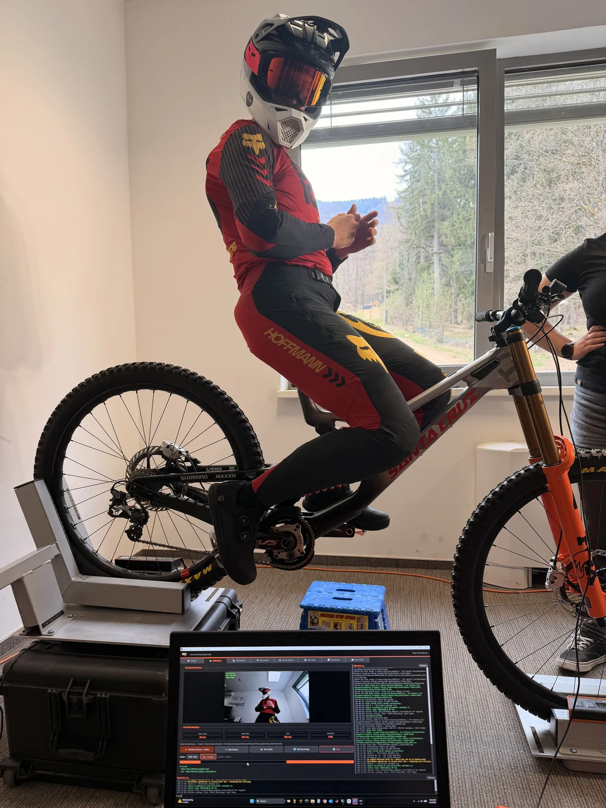
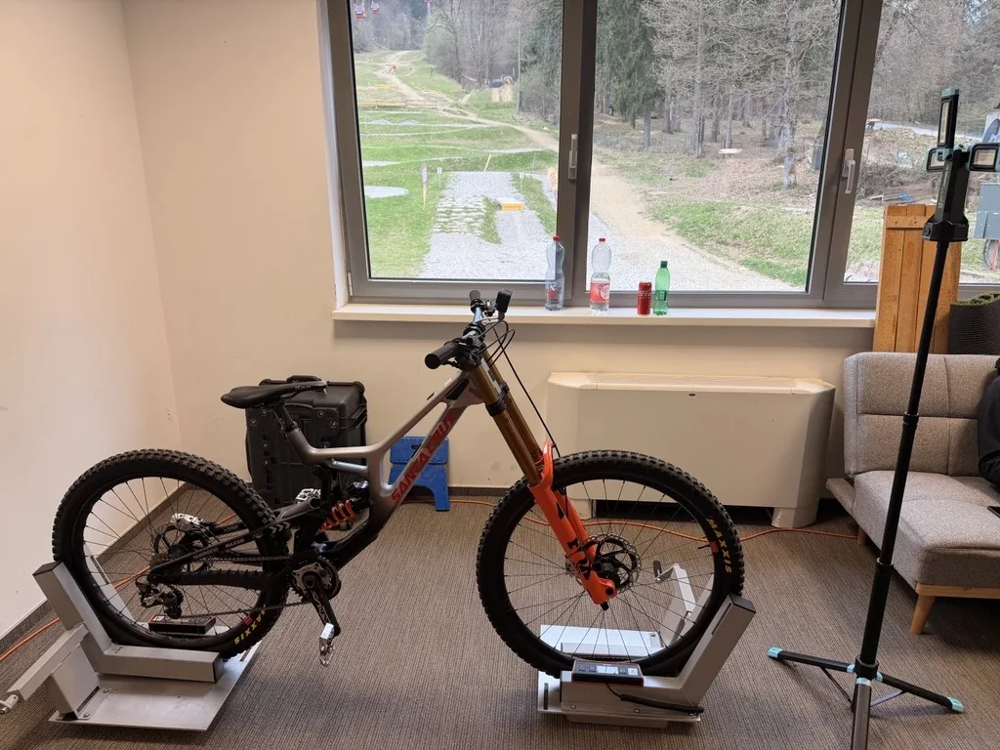
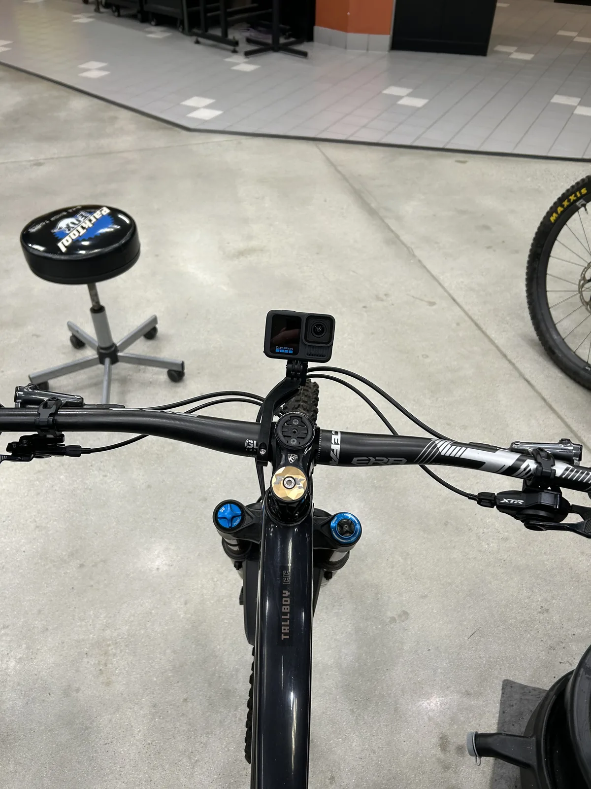
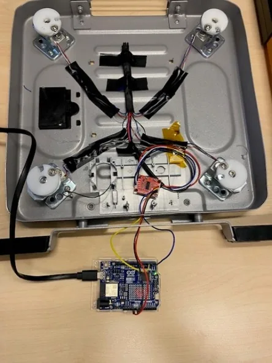
From the spring setup, the tool computes front and rear wheel-rate curves — how the force at the contact patch builds through travel — with the sag windows marked. Comparing the front and rear curves is how the model reasons about balance.
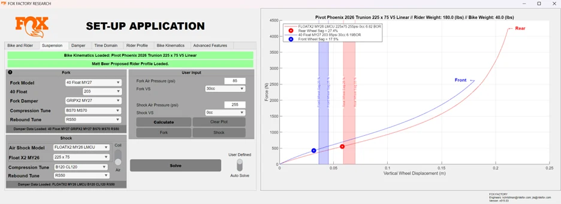
The damper model builds force-versus-shaft-speed curves for the fork and shock from the rider's clicker settings, swept across the adjuster range so feel can be compared consistently from one bike to the next.
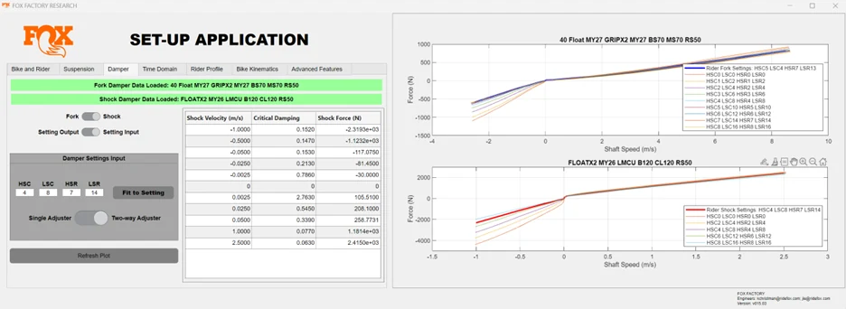
The time-domain view shows how the front and rear masses settle after an input — the goal being a balanced response front to rear. The animations contrast a balanced setup on a 45% grade against an unbalanced one on flat ground.
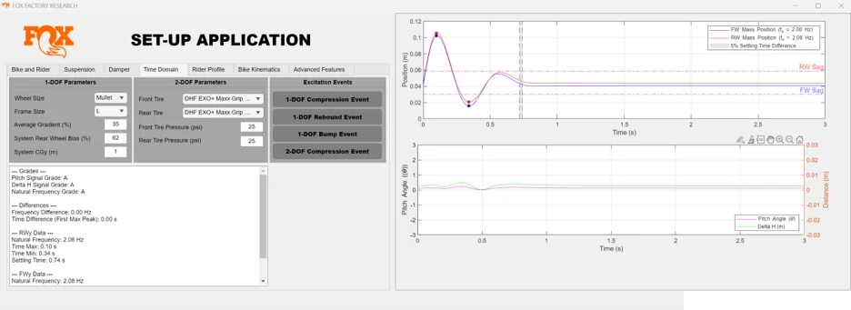
Pose-tracking applied to trail footage recovers the rider's center of gravity frame by frame. Aggregated over a run, it becomes the distribution the model is calibrated against — turning rider feel into measurable data.
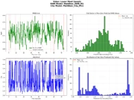
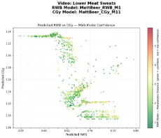